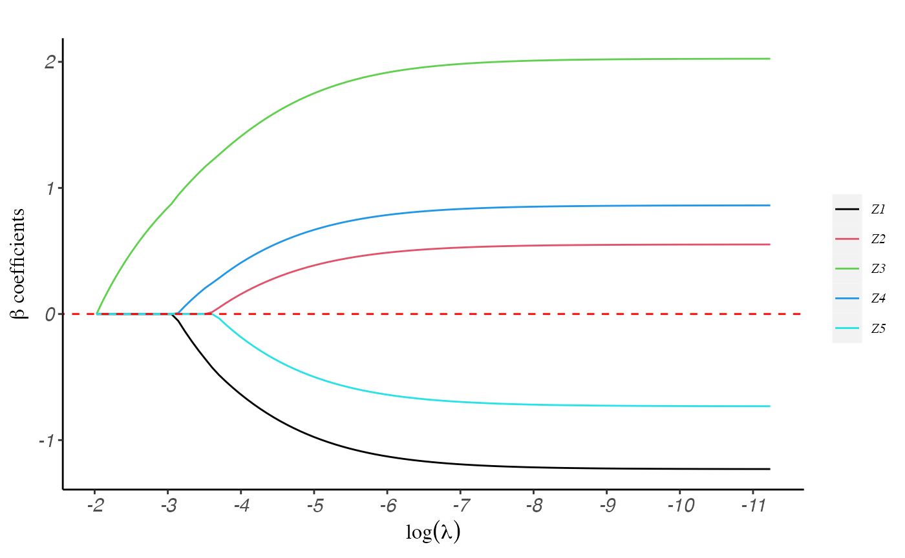
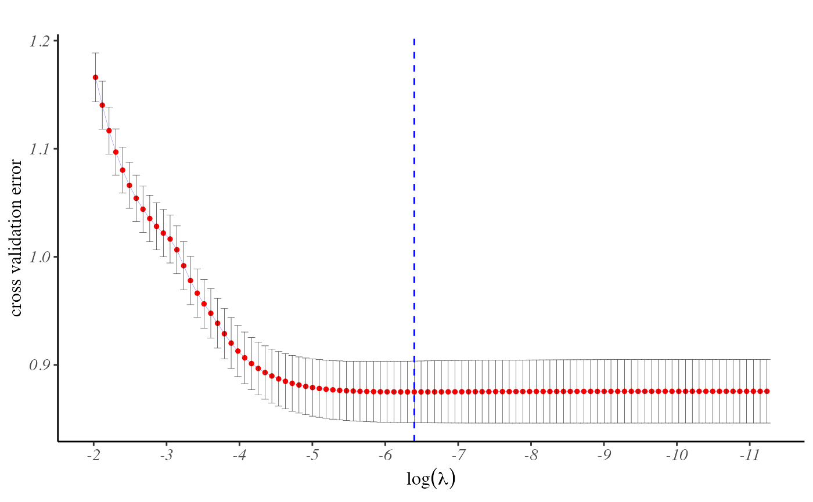

ppLasso.RmdppLasso is an R package designed to fit penalized
regression models for generalized linear models and discrete survival
models. This package was developed specifically for data sets containing
a large number of health providers. Our statistical tool outperforms
existing methods in terms of convergence speed by a significant margin,
as proven by both simulated studies and real-world data. In this
tutorial, we will demonstrate the usage of ppLasso through
example datasets.
require("devtools")
require("remotes")
remotes::install_github("UM-KevinHe/grplasso", ref = "main")This section will delve into the essential usage of the functions incorporated in the current R package, along with the interpretation of the resulting values from those functions. We will utilize example data sets to facilitate users in comprehending the R package more thoroughly.
library(ppLasso)To illustrate the process of fitting a generalized linear model, we will utilize the “GLM_Data” data set that is included in the package. This data set comprises of five predictors, an indicator for provider information, and a binary outcome variable.
data(GLM_Data)
data <- GLM_Data$data
Y.char <- GLM_Data$Y.char
prov.char <- GLM_Data$prov.char
Z.char <- GLM_Data$Z.char
head(GLM_Data$data)
#> Y Prov.ID Z1 Z2 Z3 Z4 Z5
#> 733 1 10 -0.006 -0.159 0.588 0.378 -1.430
#> 853 0 11 0.862 -0.162 0.243 0.503 0.549
#> 813 0 11 0.453 0.961 0.665 0.522 0.859
#> 576 1 8 -0.286 0.001 0.903 0.886 -0.324
#> 968 0 13 0.564 -0.194 -0.062 -0.792 -0.783
#> 1382 1 18 0.676 1.095 2.223 1.367 1.060The pp.lasso() function is utilized to fit a generalized
linear model when the covariate does not include any group
information.
By default, if the user does not specify the regularization coefficient \(\lambda\), our function will automatically generate a sequence of \(\lambda\) values, where the largest \(\lambda\) will penalize all covariates to zero.
fit <- pp.lasso(data, Y.char, Z.char, prov.char)coef function can provide an estimate of the
coefficients in the fitted model. The column names of the coefficient
matrix correspond to the \(\lambda\)
value.
# estimate of covariate coefficients
coef(fit)$beta[, 1:5]
#> 0.132 0.1202 0.1096 0.0998 0.091
#> Z1 0 0.0000000 0.0000000 0.0000000 0.0000000
#> Z2 0 0.0000000 0.0000000 0.0000000 0.0000000
#> Z3 0 0.1120347 0.2148847 0.3098777 0.3980465
#> Z4 0 0.0000000 0.0000000 0.0000000 0.0000000
#> Z5 0 0.0000000 0.0000000 0.0000000 0.0000000
# estimate of provider effects
coef(fit)$gamma[1:10, 1:5]
#> 0.132 0.1202 0.1096 0.0998 0.091
#> 1 -0.2411977 -0.2939898 -0.3431091 -0.3889330 -0.4318211
#> 2 -1.9635362 -1.8742433 -1.7984115 -1.7336457 -1.6779754
#> 3 -1.2089403 -1.1883078 -1.1712888 -1.1572109 -1.1455229
#> 4 -1.9600386 -1.8922127 -1.8332183 -1.7815619 -1.7360041
#> 5 -0.5500569 -0.5698456 -0.5894538 -0.6087582 -0.6276779
#> 6 -1.3694159 -1.2813234 -1.2034985 -1.1342974 -1.0723356
#> 7 -0.4661063 -0.4936788 -0.5199327 -0.5449261 -0.5687380
#> 8 -0.4274344 -0.4203383 -0.4151684 -0.4115749 -0.4092523
#> 9 1.0329137 0.8945008 0.7694552 0.6557870 0.5517900
#> 10 -0.9075577 -0.9146380 -0.9232143 -0.9328743 -0.9433025plot function generates the figure of the regularization
path:
plot(fit)
predict function generates the model predictions for a
given dataset based on the coefficient estimates:
predict(fit, data, Z.char, prov.char, lambda = fit$lambda, type = "response")[1:10, 1:5]
#> 0.132 0.1202 0.1096 0.0998 0.091
#> 733 0.2874999 0.2996927 0.3106971 0.3206762 0.3297643
#> 853 0.2051302 0.2112109 0.2163924 0.2208163 0.2246015
#> 813 0.2051302 0.2191951 0.2321638 0.2441339 0.2551989
#> 576 0.3947391 0.4208778 0.4449423 0.4671087 0.4875485
#> 968 0.2345694 0.2340619 0.2330311 0.2316163 0.2299295
#> 1382 0.3188411 0.3744516 0.4280555 0.4786478 0.5256182
#> 1072 0.3924033 0.3836025 0.3752418 0.3673071 0.3597819
#> 330 0.3658512 0.3870533 0.4065558 0.4245437 0.4411742
#> 204 0.2298886 0.2256943 0.2215601 0.2175107 0.2135686
#> 614 0.3947391 0.4374814 0.4772352 0.5139266 0.5476058
predict(fit, data, Z.char, prov.char, lambda = 0.001, type = "class")[1:10]
#> [1] 1 0 0 1 0 1 0 1 0 1The usage of the grp.lasso() function is similar to
above, but with the additional requirement of providing group
information for the covariates. If the user calls the function without
providing group information, it will assume that each variable is a
group on its own.
group <- GLM_Data$group
fit2 <- grp.lasso(data, Y.char, Z.char, prov.char, group = group)
plot(fit2)The optimal regularization parameter is determined by
cross-validation, which is the default method. To obtain the optimal
regularization coefficient, the user can call the
cv.pp.lasso() or cv.grp.lasso function.
fit <- cv.pp.lasso(data, Y.char, Z.char, prov.char, nfolds = 10)plot function returns the figure of the cross entropy
Loss to help user choose the optimal \(\lambda\):
plot(fit)